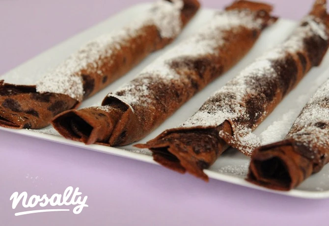

Palacsinta
Hozzávalók:
- 25 g cukrozatlan kakaópor (holland)
- 100 g finomliszt
- 2 db tojás
- 40 g vaj (olvasztott)
- 250 ml tej (hideg)
- 1 ek cukor
- 1 csipet só
- 2 ek napraforgó olaj (Floriol)

Elkészítés:
- A hozzávalókat egy tálban kézi habverővel csomómentesre keverjük.
- A palacsintatésztát fóliával letakarva minimum 2 órára a
fridzsiderbe tesszük pihenni. (A tésztának
főzőtejszín sűrűségűnek kell lennie, ha szükséges, kevés tejjel
hígíthatjuk.)
- A palacsintasütőt pár csepp olajjal felforrósítjuk, és kb. fél
merőkanálnyi tésztát öntünk a közepére.
Körkörös csuklómozdulatokkal a tésztát egyenletesen eloszlatjuk a
serpenyőben. Az első felét kb. 45
másodpercig,
a másik felét már csak 30 másodpercig sütjük.
- A kész palacsintát tányérra tesszük és tiszta konyharuhával
letakarjuk, míg a többit sütjük (így
klasszul meleg marad a tálalásig).
Sütés ideje: 20 perc